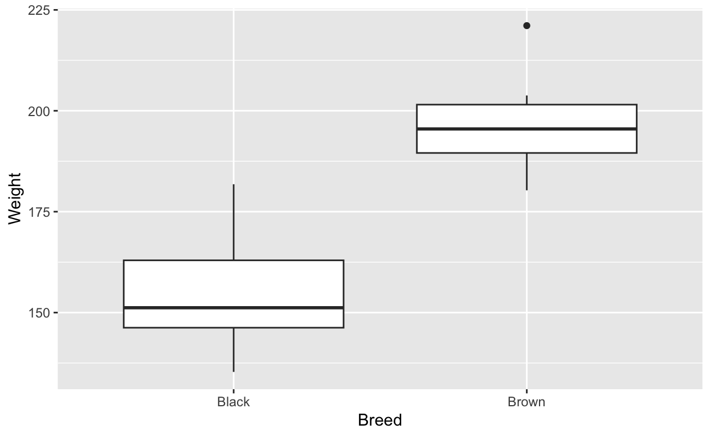
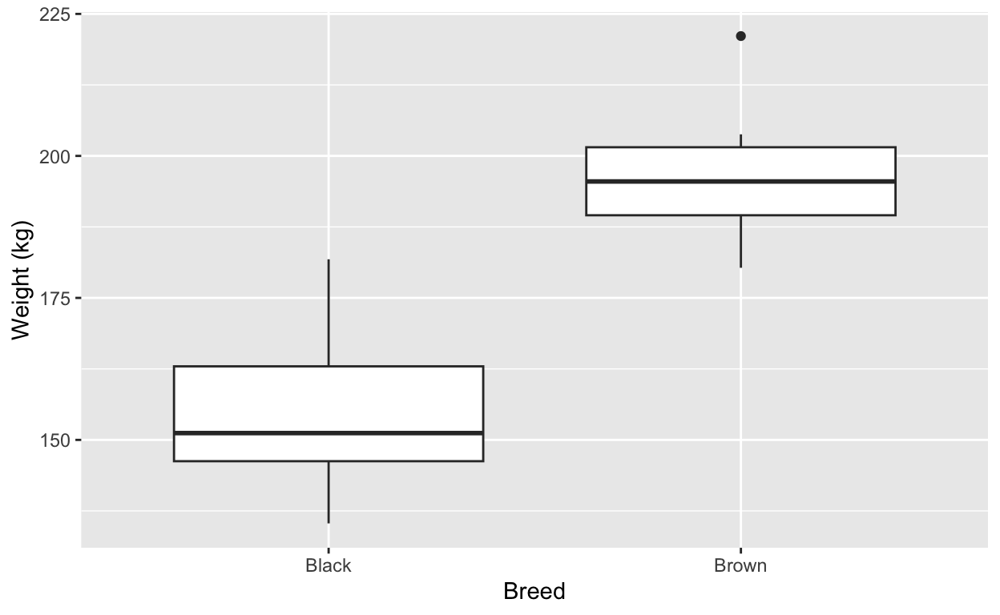

Introduction

Welcome! In this tutorial you will analyse some data using the two-sample t-test. This test is used to determine if two groups have different means.
Work through the tutorial by answering the questions and completing the exercises. If you get stuck, there are hints and solutions available to help you. You will not be able to save your progress, so make sure you complete the tutorial in one sitting and copy code you want to keep for later. However, you can always come back and start again if you need to.
Learning outcomes
- Recognise when to use a two-sample t-test.
- Use R and
ggplot2to visualise data meant for a two-sample t-test. - Perform a two-sample t-test.
- Understand the assumptions of a two-sample t-test.
- Interpret the results of a two-sample t-test.
Cattle
Background
Two breeds of cattle (brown and black) were investigated to see if one had a higher weight on average than the other when fed on the same diet. Farmers may use this information to decide which breed to raise for meat production.
Data
The data is stored in the cattle data frame.
Data exploration
It is important to know how to recognise, and visualise data that is suitable for a two-sample t-test. Let’s start by checking the structure of the data. Which function would you use? Select Hints if you need help.
Click on Run Code or use the shortcut
Ctrl + Enter to run the code in the code chunk.
# This function returns the structure of the data frame and
# displays the number of observations and variables.# Any of these solutions will work
str(cattle)
dplyr::glimpse(cattle) # needs dplyr packageWhen you’re looking at the structure of the data, you’re not only
interested in the number of observations and variables, but also the
type of variables. In this case, we have two variables:
Weight and Breed.
The Weight variable is continuous,
while the Breed variable is categorical.
However, Breed is currently categorised as a character
variable.
class(cattle$Breed)## [1] "character"We need to convert it to a factor variable.
Wait! Why would we convert it to a factor variable?
If we did not collect the data ourselves, we may not know the type of
variable Breed is. To determine the type of variable, we
can:
- get context from the data source, or
- check the data dictionary that comes with the data, or
- check if it has a limited number of unique values by using the
unique()function.
If we cannot determine the type of variable from the data source or
the data dictionary, we can use the unique() function to
check the number of unique values. If the number of unique values is
small, then it is likely a factor variable. Use the
unique() function to check the number of unique values in
the Breed variable.
# Your need to specifically select the Breed variable within
# the cattle object and use the unique() function.unique(cattle$Breed)Out of the 27 rows, the Breed variable has two unique
values: Brown and Black. This means that it is
a factor variable. So we can convert it to a factor variable.
Converting to a factor variable
Below are two methods to do so. The first method uses base R, while
the second method uses the tidyverse package. Which method
you use is up to you, but the tidyverse method is
(eventually) more readable and easier to understand due to the use of pipes.
Base R method
cattle$Breed <- as.factor(cattle$Breed)Using tidyverse
library(tidyverse)
# Using the cattle data frame, mutate the Breed variable
# to a factor variable
cattle <- cattle %>%
mutate(Breed = as.factor(Breed))We can check the structure of the data again to confirm that the
Breed variable has been converted to a factor variable.
We’ll just do it now for you so you don’t have to run the code. Instead
of str() let’s use glimpse() from the
dplyr package.
dplyr::glimpse(cattle)## Rows: 27
## Columns: 2
## $ Breed <chr> "Brown", "Brown", "Brown", "Brown", "Brown", "Brown", "Brown", …
## $ Weight <dbl> 187.6, 180.3, 198.6, 190.7, 196.3, 203.8, 190.2, 201.0, 194.7, …It might be tempting to jump straight into the two-sample t-test, but it is important to visualise the data first. This will help us to understand the distribution of the data and identify any potential issues even before we perform our “official” assumptions checks. We will do this in the next section.
Visualising two groups
The boxplot is a good choice when comparing two groups of data and is often the first plot to create when visualising data for a two-sample t-test. It allows us to compare between groups while also retaining information about the distribution of the data, which is important for the test.
In this tutorial we will create a boxplot that is fit for scientific publication. Usually this is the one plot that you will decide to use to graphically represent your data. Often called a summary plot, it should be clear, concise, and informative as it summarises the data in a single plot.
This is in contrast to exploratory plots and diagnostic plots, which are used to explore the data, check assumptions, and identify issues. Such plots are not usually included in scientific publications but are important for the researcher to understand the data.
Using ggplot2 to create a boxplot
Load the ggplot2 package.
library(ggplot2)This package is also loaded if you are using the
tidyverse package, so library(tidyverse) will
also load ggplot2.
Plotting in ggplot2 requires data to be in a
specific format. This format is often referred to as “long”
format, and in data science circles it is also called “tidy” data. The
cattle data is already in this format – each row is
an observation and each column is a
variable.
If your data is not in this format e.g. if you have a column for each
breed, you will need to manipulate the data to be in this format. You
can do this reproducibly in R using the tidyverse package,
or manually in Excel or Google Sheets.
The advantages of “tidy” data are numerous, but the most important one is that R functions are designed to work with data in this format – so you will save time and effort by keeping your data tidy.
Anyway, let’s plot the data.
The most basic plot can be created using the code below:
ggplot(data = cattle, mapping = aes(x = Breed, y = Weight)) +
geom_boxplot()
Above, we are simply calling the ggplot() function and
specifying the data and aesthetics. We are then adding a
geom_boxplot() layer to create the boxplot.
It works, but it will not pass muster for a scientific publication. We need to add labels, a title, and a figure caption. We also want to (in most cases) reduce distractions by removing the gridlines and background colour.
Labels can be added by adding more “layers” to the plot using the
+ operator. The labs() function is used to add
labels, titles, and captions. We will only add labels for the
x-axis and y-axis. Titles are not necessary in most
cases unless we have a multi-panel figure.
ggplot(data = cattle, mapping = aes(x = Breed, y = Weight)) +
geom_boxplot() +
labs(
x = "Breed",
y = "Weight (kg)",
)
To remove the grid lines and background colour, we can either muck
around with the theme settings or use the theme_classic()
function. This function is part of the ggplot2 package and
is used to remove the background colour and gridlines.
ggplot(data = cattle, mapping = aes(x = Breed, y = Weight)) +
geom_boxplot() +
labs(
x = "Breed",
y = "Weight (kg)",
) +
theme_classic()Figures need captions, and applying them uses different methods
depending on whether you are producing a .Rmd document or a
Quarto .qmd document. Assuming that you are using Quarto,
you want to use the label and fig-cap options
in the code chunk.
```{r}
#| label: fig-cattle-boxplot
#| fig-cap: "Boxplot of cattle weight (kg) by breed."
ggplot(data = cattle, mapping = aes(x = Breed, y = Weight)) +
geom_boxplot() +
labs(
x = "Breed",
y = "Weight (kg)",
) +
theme_classic()
```This will show the figure caption below the plot. Note that execution
options are not visible in the final document (so your #|
lines will not be visible).
ggplot(data = cattle, mapping = aes(x = Breed, y = Weight)) +
geom_boxplot() +
labs(
x = "Breed",
y = "Weight (kg)",
) +
theme_classic()Figure 1. Boxplot of cattle weight (kg) by breed.
The plot is now ready for publication, but we have provided the minimal amount of information. You can add more layers to the plot to make it more informative. For example, you can change the colours, flip the axes, or add a title. To do so it is important to understand how to search for help using Google, or prompt GenAI to help you, which we will not cover in this tutorial.
You can now go through the code above and run it in this document below. Play around with the code to see how it changes the plot. Once you are ready, hit the Continue (or Next Page, depending on how you navigated this tutorial) button to move on.
# Add the code to create the boxplot hereHATPC
Let’ use the HATPC method to guide us through the statistical analysis for a two-sample t-test. The steps are:
- Hypothesis: State the null and alternative hypotheses.
- Assumptions: State the assumptions of the test.
- Test: Perform the test (calculate the test statistic).
- P-value: Calculate the p-value.
- Conclusion: Make a conclusion based on the p-value.
Work through these steps should be routine for you by now. If you are unsure about any of the steps, you can always refer back to the previous labs and tutorials.
Hypothesis
Assumptions
The assumptions of the two-sample t-test are:
- Normality: The data in each group is normally distributed.
- Equal variance: The variance in each group is equal.
Normality
Lecture 6a covered the normality assumption. Try to work out how you would do it for this data set.
# Click on Hints for help (and answers).# You can use the boxplot, histogram, or qqplot
# to check for normality. You can also use a formal
# statistical test such as the Shapiro-Wilk test.# Using a boxplot should be simple as you have already done so
# in the previous exercise.
ggplot(data = cattle, mapping = aes(x = Weight)) +
geom_histogram()# QQ-plot
ggplot(data = cattle, mapping = aes(sample = Weight)) +
stat_qq() +
stat_qq_line()# Histogram
ggplot(data = cattle, mapping = aes(x = Weight)) +
geom_histogram() +
facet_wrap(~ Breed)# Shapiro-Wilk test
shapiro.test(cattle$Weight)Equal variances
Again, use Lecture 6a to work out how you would check for equal variances.
# Click on Hints for help (and answers).# You can use the boxplot to check for equal variances, or
# perform a statistical test.# Levene's test
library(car)
leveneTest(Weight ~ Breed, data = cattle)# Bartlett's test
bartlett.test(Weight ~ Breed, data = cattle)Test
Run the two-sample t-test using the t.test()
function in R. Remember to specify whether the equal variance
assumption is met or not in the function!
# Run the two-sample t-test# You need to specify the formula and the data frame.fit <- t.test(Weight ~ Breed, data = cattle, var.equal = TRUE)
fitP-value and conclusion
Let’s view the results again:
fit <- t.test(Weight ~ Breed, data = cattle, var.equal = TRUE)
fit##
## Two Sample t-test
##
## data: Weight by Breed
## t = -9.4624, df = 25, p-value = 9.663e-10
## alternative hypothesis: true difference in means between group Black and group Brown is not equal to 0
## 95 percent confidence interval:
## -51.71989 -33.23011
## sample estimates:
## mean in group Black mean in group Brown
## 153.700 196.175You should know how to interpret the results by now. If you are unsure, refer back to the lecture notes or the previous tutorials.
You may write your conclusion in the box below. The
# Write your conclusion here using the comment tag `#`Click on the dropdown below to see the solution.
+ Click for Solution
The results of the two-sample t-test show that the p-value is less than 0.05. This means that we reject the null hypothesis and conclude that the two groups have different mean weights. From the results, Brown cows have a significantly higher mean weight than Black cows.
Thanks
You have reached the end of this tutorial. We hope you have learned how to perform a two-sample t-test and interpret the results.
This document is developed using resources that are available under a Creative Commons Attribution 4.0 International license, made available on the SOLES Open Educational Resources repository.